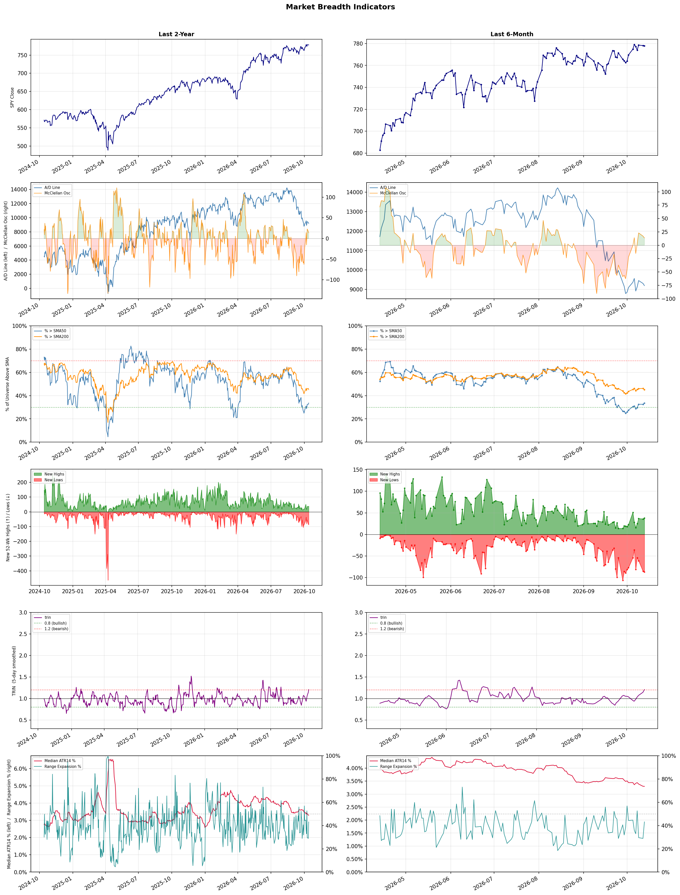

A daily market breadth and sector rotation report for active investors
| Item | Read |
|---|---|
| Regime | Defensive |
| Risk posture | Defensive |
| Universe | 1,316 stocks tracked · 38 new 52-week highs · 30 active swing setups |
| Breadth | only 33.7% of tracked stocks are above SMA50, new lows exceed new highs (87 vs 38) |
| Leadership | Oil & Gas Refining & Marketing, Health Information Services, and Copper |
| Weakest groups | Gambling, REIT - Mortgage, and Uranium |
Use this report to prioritize research and chart review; validate entries, stops, liquidity, earnings, and risk before acting.
| Item | Read |
|---|---|
| Primary read | Defensive regime with Defensive risk posture. |
| Research queue | MPC, VLO, PBF, DINO, PSX |
| Leadership focus | Oil & Gas Refining & Marketing, Health Information Services, and Copper |
| Caution list | Gambling, REIT - Mortgage, and Uranium |
| Review prompt | Check extension risk, chart location, fundamentals, valuation, and earnings before using any research row. |
| Item | Read |
|---|---|
| Primary read | 3 active risk warnings; use screen output as watchlist input only. |
| Bullish screens | DINO, HNGE, BP, SHEL, SU |
| Bearish screens | INDI, LAES, OKLO, RGTI |
| Alerts / levels | Automated trigger, stop, ATR, liquidity, reward/risk, and event-risk levels are pending future enrichment. |
| Review prompt | Open the linked chart, define trigger and invalidation, then check liquidity and event risk independently. |
Risk Posture: Defensive — screen backdrop favors caution; require independent risk review before new exposure
Metric context: McClellan below -50 = elevated selling pressure; below -100 = washout territory. Range Expansion = share of stocks with daily range above their 20-day average. Signal Density = share of tracked names appearing in signal screens.
| Breadth Date | % > SMA50 | % > SMA200 | New Highs | New Lows | McClellan | Median Range | Avg Range | Median ATR14 | Range Expansion | Signal Density |
|---|---|---|---|---|---|---|---|---|---|---|
| 2026-10-13 | 33.7% | 45.1% | 38 | 87 | 13.7 | 3.0% | 3.5% | 3.3% | 43.2% | 4.3% |

Prior comparison date: October 12, 2026
| Metric | Prior | Current | Change |
|---|---|---|---|
| Regime | Defensive | Defensive | unchanged |
| Risk Posture | Defensive | Defensive | unchanged |
| % > SMA50 | 32.5% | 33.7% | +1.1 pts |
| % > SMA200 | 46.2% | 45.1% | -1.0 pts |
| New Highs | 36 | 38 | +2 |
| New Lows | 85 | 87 | -2 |
Top-10 industries entering: Discount Stores. Top-10 industries leaving: Scientific & Technical Instruments. New multi-signal long setups: BP, CBRL, CHD, DHT, DV, EVRG, IFF, LIN, OGE. New multi-signal short setups: OKLO.
| Status | Tickers | Read |
|---|---|---|
| Added | BP, CBRL, CHD, DHT, DV, EVRG, IFF, LIN | New technical screen matches vs prior report. |
| Removed | ABBV, ASX, BLDP, BLDR, BROS, CHTR, DT, EOSE | No longer present in today's technical screen matches. |
| Still Active | BOX, DINO, FIGS, HAS, HNGE, INDI, LAES, MSFT | Appeared in both current and prior reports. |
| Promoted | none | Model Screen Score improved by at least 15 points. |
| Downgraded | none | Model Screen Score declined by at least 15 points. |
| Direction | Industry | ETF | Prior Rank | Current Rank | Days | Rank Change |
|---|---|---|---|---|---|---|
| Rose | Apparel Manufacturing | N/A | 82 | 14 | 35 | +68 |
| Rose | Utilities - Independent Power Producers | XLU | 86 | 26 | 28 | +60 |
| Rose | Semiconductor Equipment & Materials | SOXX | 81 | 22 | 28 | +59 |
| Rose | Footwear & Accessories | N/A | 87 | 34 | 42 | +53 |
| Rose | Scientific & Technical Instruments | N/A | 61 | 11 | 42 | +50 |
Bull: The Apparel Manufacturing sector is experiencing a rising relative strength primarily due to favorable industry trends highlighted in recent headlines, such as shifting trade deals and a strategic move away from reliance on China for sourcing, which is revitalizing the sector. Additionally, the positive outlook for textile-apparel stocks, as noted by sources like Yahoo Finance and Forbes, suggests strong investor confidence in the industry's growth potential through 2026, driven by evolving consumer preferences and increased demand for sustainable and locally sourced products.
Bear: While the recent headlines suggest a positive outlook for the Apparel Manufacturing sector, it is crucial to remain cautious as many of these trends are speculative and dependent on external factors that are not guaranteed to materialize. The shift away from China may lead to increased production costs and supply chain disruptions, while evolving consumer preferences towards sustainability could result in higher compliance costs for manufacturers. Additionally, the overall economic environment, including inflationary pressures and potential recession risks, could dampen consumer spending on apparel, undermining the growth potential touted by bullish analysts.
Verdict: The Apparel Manufacturing sector's rising relative strength is fundamentally driven by strategic shifts in sourcing away from China and a growing consumer demand for sustainable products, which are attracting investor confidence. However, key risks include potential increases in production costs and supply chain disruptions, alongside broader economic challenges like inflation and recession risks that could negatively impact consumer spending on apparel. Investors should monitor these external factors closely while considering opportunities in the sector.
Sources: Google News
Bull: The rising relative strength of Utilities - Independent Power Producers is likely driven by a combination of robust growth potential and increasing investor interest in renewable energy solutions, as highlighted by multiple sources noting the strong growth grades of top utility stocks and the best-performing utility stocks of October 2026. Additionally, the exploration of electricity as a beneficiary of AI advancements suggests a transformative shift in power generation efficiency and innovation, further enhancing the sector's appeal amidst a broader push towards sustainable energy.
Bear: While the rising relative strength of Utilities - Independent Power Producers may appear promising, it is essential to consider the potential headwinds facing the sector, including regulatory pressures, rising interest rates, and the high capital costs associated with transitioning to renewable energy sources. Additionally, the excitement around AI's impact on electricity generation may be overstated, as the practical implementation of such technologies could face significant operational and infrastructural challenges, potentially dampening growth prospects in the near term.
Verdict: The Utilities - Independent Power Producers sector is experiencing rising strength primarily due to robust growth potential fueled by increasing investor interest in renewable energy solutions and advancements in technology, particularly AI, which may enhance power generation efficiency. However, investors should remain cautious of key risks such as regulatory pressures, rising interest rates, and the high capital costs of transitioning to renewables, which could hinder growth and profitability in the near term.
Sources: Google News
Bull: The Semiconductor Equipment & Materials sector is experiencing rising relative strength due to robust investment expectations driven by the booming artificial intelligence (AI) market, as highlighted in the headline about materials, parts, and equipment stocks climbing on AI investment expectations. Despite recent profit-taking and short-term volatility in individual stocks like Applied Materials and Veeco Instruments, the long-term demand for advanced semiconductor manufacturing capabilities remains strong, fueled by the increasing need for chips in AI applications and other high-tech sectors. This underlying demand is likely to sustain growth in the semiconductor equipment industry, positioning it favorably compared to other sectors.
Bear: While the bull thesis highlights strong long-term demand driven by AI, it's crucial to recognize that the semiconductor equipment sector is highly cyclical and sensitive to macroeconomic conditions. Recent profit-taking and stock declines indicate that investors may be concerned about overvaluation and the sustainability of growth, especially as global supply chain challenges and geopolitical tensions could disrupt production and dampen investment sentiment. Additionally, the recent volatility in major players like Applied Materials and Veeco suggests that the market may be underestimating the potential for a slowdown in demand as companies reassess their capital expenditures in a potentially weakening economic environment.
Verdict: The Semiconductor Equipment & Materials sector is likely experiencing rising relative strength due to heightened investment expectations fueled by the booming AI market, which is driving demand for advanced semiconductor manufacturing capabilities. However, investors should remain cautious of the cyclical nature of the industry and the potential for a slowdown in demand, as macroeconomic uncertainties and geopolitical tensions could lead to reduced capital expenditures and impact growth sustainability. Monitoring these economic indicators will be crucial for making informed investment decisions in this sector.
Sources: Google News
Bull: The Footwear & Accessories industry is experiencing a rise in relative strength primarily due to a rebound in consumer discretionary spending, as highlighted by recent positive earnings recaps and stock upgrades for key players like V.F. Corp (VFC) and Movado (MOV). The bullish sentiment is further supported by analysts identifying strong growth potential in footwear stocks, with forecasts suggesting significant upside through 2026, indicating robust demand and a favorable market environment for companies like Deckers Outdoor Corporation (DECK).
Bear: While the Footwear & Accessories industry may appear to be experiencing a rise in relative strength, this could be misleading given the broader economic uncertainties and potential headwinds such as inflation pressures and changing consumer spending habits. Additionally, the upgrades for companies like V.F. Corp and Movado may not reflect a sustainable trend, as they could be short-term reactions to seasonal sales rather than indicative of long-term growth, especially in a market where consumer discretionary spending can quickly shift in response to economic conditions. Thus, the optimism surrounding stocks like Deckers Outdoor Corporation may overlook underlying vulnerabilities that could impact future performance.
Verdict: The Footwear & Accessories industry's rise is fundamentally driven by a rebound in consumer discretionary spending, supported by positive earnings reports and stock upgrades for major players, indicating strong growth potential through 2026. However, investors should remain cautious of the bear case, as economic uncertainties and inflation pressures could lead to a rapid shift in consumer spending habits, potentially undermining the sustainability of this upward trend.
Sources: Google News
Bull: The Scientific & Technical Instruments sector is experiencing rising relative strength primarily due to the increasing demand for advanced technologies driven by the AI boom, as highlighted in the Morningstar article. Companies like Coherent Corp. and Keyence Corporation are well-positioned to benefit from this trend, as their innovations in optical and measurement technologies are essential for AI applications, thereby attracting investor interest and driving stock performance. This sector's growth is further supported by a broader market shift towards high-tech solutions, positioning it favorably against other industries.
Bear: While the AI boom may create opportunities for some companies within the Scientific & Technical Instruments sector, the overall market dynamics suggest that rising interest rates and inflationary pressures could dampen capital expenditures in technology. Additionally, the high valuations of companies like Coherent Corp. and Keyence Corporation may not be sustainable if growth expectations fail to materialize, leading to potential corrections in stock prices as investors reassess the risk-reward balance in a tightening economic environment.
Verdict: The Scientific & Technical Instruments sector is likely experiencing rising relative strength due to heightened demand for advanced technologies fueled by the AI boom, with companies like Coherent Corp. and Keyence Corporation poised to capitalize on this trend through their innovative solutions. However, investors should remain cautious of the potential impact of rising interest rates and inflation, which could constrain capital expenditures and lead to corrections in high-valued stocks if growth expectations do not materialize.
Sources: Google News
| Direction | Industry | ETF | Prior Rank | Current Rank | Days | Rank Change |
|---|---|---|---|---|---|---|
| Fell | Uranium | URA | 20 | 85 | 35 | -65 |
| Fell | Agricultural Inputs | N/A | 6 | 63 | 28 | -57 |
| Fell | Biotechnology | XBI | 6 | 58 | 42 | -52 |
| Fell | Banks - Diversified | N/A | 12 | 61 | 35 | -49 |
| Fell | Telecom Services | N/A | 27 | 75 | 35 | -48 |
Bear: While the bull analyst points to a sector correction favoring profitable producers, this may overlook the fundamental challenges facing the uranium market, including persistent oversupply and geopolitical risks that could hinder long-term demand for nuclear energy. Furthermore, the recent rise in NuScale Power shares, despite dilution, could be more indicative of speculative enthusiasm rather than a sustainable shift in investor sentiment, suggesting that the broader market may still be vulnerable to volatility and further corrections as investors grapple with the realities of the industry's economic landscape.
Bull: The recent decline in the relative strength of uranium stocks can be attributed to a sector correction that has highlighted the disparity between profitable uranium producers and loss-making developers, as indicated by ChartMill. Additionally, the rise in NuScale Power shares despite dilution suggests that investor sentiment is shifting towards more established and financially stable players in the nuclear sector, potentially sidelining speculative investments in development-stage companies. This bifurcation in the market may be causing a broader pullback in uranium equities as investors reassess risk and prioritize profitability.
Verdict: The recent decline in uranium stocks is primarily driven by a sector correction that favors profitable producers over speculative developers, reflecting a market reassessment of risk and profitability. However, the key risk remains the persistent oversupply and geopolitical uncertainties that could undermine long-term demand for nuclear energy, suggesting investors should remain cautious and prioritize established companies with solid financials while monitoring market conditions closely.
Sources: Google News
Bear: While the bull analyst highlights potential growth opportunities for specific companies, the overall sector faces significant headwinds that are unlikely to dissipate in the near term. Supply chain disruptions and volatile energy prices remain persistent challenges that can severely impact profitability and operational efficiency across the agricultural inputs industry. Furthermore, the shift of investor focus towards the economically sensitive materials sector, as mentioned in Seeking Alpha, suggests that capital inflows may continue to favor sectors with stronger growth trajectories, leaving agricultural inputs under pressure and potentially stalling any recovery.
Bull: The Agricultural Inputs sector is experiencing a decline in relative strength primarily due to supply chain disruptions and volatility in fertilizer and energy prices, as highlighted in the Webull article on stocks exposed to these shocks. Additionally, the broader economic environment, as noted in Seeking Alpha, indicates that the economically sensitive materials sector is breaking out, which may divert investor attention and capital away from agricultural inputs. However, the positive outlook for specific companies like Escorts Kubota, Coromandel International, and Godrej Agrovet, as mentioned in Univest, suggests that there are strong growth opportunities within the sector that could lead to a rebound.
Verdict: The Agricultural Inputs sector is likely experiencing a decline due to persistent supply chain disruptions and volatile energy prices, which are undermining profitability and operational efficiency. While there are promising growth opportunities for specific companies, the key risk remains that investor capital may continue to flow towards more robust sectors, such as economically sensitive materials, further sidelining agricultural inputs and stalling any potential recovery. Investors should closely monitor these dynamics and consider reallocating resources to sectors showing stronger growth potential.
Sources: Google News
Bear: While recent stock surges in companies like Novavax and Moderna may suggest a temporary rally, the broader biotechnology sector is grappling with fundamental challenges that cannot be overlooked. Regulatory uncertainties, potential pricing pressures, and the high costs of drug development continue to create significant headwinds, making it difficult for many firms to achieve sustainable profitability. Furthermore, the relative strength trend is falling, indicating that investor sentiment remains cautious, and any short-term gains could be more reflective of speculative trading rather than a solid recovery in the sector's fundamentals.
Bull: The Biotechnology sector is experiencing a relative strength decline primarily due to market volatility and investor caution surrounding regulatory uncertainties and pricing pressures, which can dampen enthusiasm for biotech innovations. However, recent headlines indicate a potential turnaround, as firms like Novavax and Moderna are witnessing significant stock surges, driven by ongoing innovation and a projected rally fueled by mergers and acquisitions, as highlighted by Goldman Sachs. This suggests that while the sector may currently be underperforming relative to others, the fundamentals supporting growth and investment are strengthening, positioning biotech for a rebound.
Verdict: The biotechnology sector's current decline can be attributed to persistent regulatory uncertainties and pricing pressures, which are exacerbated by high drug development costs, leading to cautious investor sentiment. While recent stock surges in companies like Novavax and Moderna may signal short-term optimism, the key risk remains that these gains could be speculative, failing to reflect a sustainable recovery in the sector's fundamentals. Investors should closely monitor regulatory developments and market conditions to assess the viability of long-term investments in biotech.
Sources: Google News
Bear: While the bull analyst attributes the falling relative strength of the Banks - Diversified sector to shifting investor sentiment, it is crucial to recognize that this trend may also reflect deeper systemic issues within the banking industry, such as rising interest rates, increasing regulatory scrutiny, and potential credit quality deterioration. Additionally, the emphasis on ETFs and comparisons among major banks may mask underlying vulnerabilities, including shrinking net interest margins and heightened competition from fintech disruptors, which could further erode profitability and investor confidence in the sector.
Bull: The falling relative strength of the Banks - Diversified sector can likely be attributed to investor sentiment shifting towards more favorable sectors as highlighted in recent headlines, such as "The Best Bank Stocks to Buy" from Morningstar and comparisons of stock performance among major banks like JPMorgan Chase and Bank of America. Additionally, the focus on upcoming investment opportunities in bank ETFs for 2026, as noted by The Motley Fool, suggests a cautious outlook on the sector, prompting investors to seek better growth prospects elsewhere. This shift in attention may be exacerbated by concerns over economic conditions affecting profitability and growth in the banking sector.
Verdict: The recent decline in the Banks - Diversified sector likely stems from a combination of shifting investor sentiment towards more promising sectors and underlying systemic challenges, such as rising interest rates and increasing regulatory scrutiny. Key risks include the potential for deteriorating credit quality and shrinking net interest margins, which could further undermine profitability and investor confidence. Investors should closely monitor these factors while considering reallocating their portfolios to more resilient sectors or exploring bank ETFs with a cautious approach.
Sources: Google News
Bear: While the bull analyst points to competitive pressures and emerging winners as key factors for the decline in Telecom Services, it's important to recognize that the sector is grappling with fundamental challenges such as high capital expenditure requirements, regulatory scrutiny, and stagnant subscriber growth. Additionally, the recent headlines indicate a broader market skepticism towards telecom stocks, with concerns about long-term profitability and the sustainability of dividends, which could deter investors regardless of individual company performance. This suggests that the sector's struggles may be more systemic than simply a reaction to competitive dynamics or the emergence of a few standout players.
Bull: The recent decline in the relative strength of Telecom Services can be attributed to heightened competitive pressures, particularly following SpaceX's spectrum deal, which has raised concerns about market share and pricing power within the sector, as highlighted in The Globe and Mail. Additionally, the focus on emerging winners like Lumen and other communication stocks, as noted by StockStory and The Motley Fool, suggests a shift in investor sentiment towards companies perceived as having stronger growth potential, further contributing to the sector's relative weakness.
Verdict: The Telecom Services industry is likely experiencing a decline due to a combination of heightened competitive pressures, particularly from new entrants like SpaceX, and systemic challenges such as high capital expenditures and stagnant subscriber growth. The key risk from the bear case is that ongoing regulatory scrutiny and market skepticism regarding long-term profitability could further deter investment, suggesting that the sector may not recover even if individual companies show promise. Investors should approach telecom stocks cautiously, focusing on those with strong fundamentals and growth potential while remaining aware of the broader industry challenges.
Sources: Google News
| Industry | Rank | ETF | 7d | 14d | 28d | 42d | Chg 42d | Size | 20D | 60D | Composite | Active Setups |
|---|---|---|---|---|---|---|---|---|---|---|---|---|
| Oil & Gas Refining & Marketing | 1 | CRAK | 1 | 1 | 2 | 1 | 0 | 7 | 13.1% | 37.6% | 0.997 | 0 |
| Health Information Services | 2 | N/A | 2 | 5 | 4 | 3 | +1 | 12 | 5.5% | 34.7% | 0.871 | 1 |
| Copper | 3 | COPX | 19 | 9 | 33 | 13 | +10 | 6 | 5.1% | 24.1% | 0.848 | 0 |
| Apparel Retail | 4 | XRT | 13 | 10 | 46 | 21 | +17 | 8 | 11.1% | 7.6% | 0.838 | 0 |
| Discount Stores | 5 | XRT | 14 | 15 | 31 | 32 | +27 | 7 | 5.3% | 6.0% | 0.828 | 1 |
| Oil & Gas Integrated | 6 | XLE | 8 | 6 | 3 | 4 | -2 | 10 | 1.3% | 18.8% | 0.824 | 0 |
| Diagnostics & Research | 7 | N/A | 3 | 2 | 1 | 2 | -5 | 16 | 0.3% | 25.5% | 0.813 | 1 |
| Household & Personal Products | 8 | XLP | 20 | 25 | 21 | 19 | +11 | 12 | 5.1% | 7.7% | 0.813 | 1 |
| Software - Infrastructure | 9 | IGV | 9 | 12 | 11 | 18 | +9 | 62 | 1.8% | 11.9% | 0.787 | 1 |
| Steel | 10 | SLX | 18 | 17 | 9 | 27 | +17 | 5 | -0.1% | 16.9% | 0.767 | 0 |
Rank columns (7d–42d) show the industry's rank that many trading days ago — lower is stronger. Chg 42d = rank change vs 42 trading days ago — positive means the industry moved up. 20D and 60D are the mean stock return within the industry over that period. Active Setups: count of today's swing-trade candidates from this industry appearing across all signal screens.
| Industry | Rank | ETF | 7d | 14d | 28d | 42d | Chg 42d | Size | 20D | 60D | Composite | Active Setups |
|---|---|---|---|---|---|---|---|---|---|---|---|---|
| Gambling | 87 | N/A | 84 | 87 | 40 | 59 | -28 | 5 | -18.2% | -24.7% | 0.039 | 0 |
| REIT - Mortgage | 86 | N/A | 86 | 82 | 64 | 45 | -41 | 11 | -15.1% | -21.5% | 0.041 | 0 |
| Uranium | 85 | URA | 77 | 83 | 70 | 36 | -49 | 6 | -17.1% | -13.2% | 0.056 | 0 |
| Resorts & Casinos | 84 | N/A | 85 | 86 | 77 | 80 | -4 | 6 | -11.8% | -21.2% | 0.070 | 0 |
| Aerospace & Defense | 83 | ITA | 70 | 66 | 79 | 78 | -5 | 26 | -12.8% | -13.0% | 0.100 | 0 |
| Chemicals | 82 | N/A | 83 | 85 | 76 | 85 | +3 | 8 | -11.1% | -22.3% | 0.102 | 0 |
| Other Industrial Metals & Mining | 81 | N/A | 80 | 74 | 59 | 40 | -41 | 21 | -13.5% | -10.3% | 0.130 | 0 |
| Utilities - Renewable | 80 | N/A | 74 | 70 | 72 | 83 | +3 | 6 | -12.0% | -18.9% | 0.148 | 0 |
| Real Estate Services | 79 | N/A | 82 | 84 | 57 | 52 | -27 | 9 | -8.3% | -14.6% | 0.157 | 1 |
| Electrical Equipment & Parts | 78 | XLI | 58 | 46 | 83 | 86 | +8 | 12 | -9.3% | -20.0% | 0.163 | 0 |
Rank columns (7d–42d) show the industry's rank that many trading days ago — lower is stronger. Chg 42d = rank change vs 42 trading days ago — positive means the industry moved up. 20D and 60D are the mean stock return within the industry over that period. Active Setups: count of today's swing-trade candidates from this industry appearing across all signal screens.
These are research candidates from top-ranked stocks, capped at five names per industry to avoid over-concentration. Returns shown (60D, 120D, 250D) are historical — they reflect where prices have already moved, not forward expectations. Extension Risk flags names that may require extra patience or a better entry point. They are not buy signals.
Chart: TV = TradingView chart (opens in browser); PDF = local chart file (if downloaded).
| Ticker | Name | Industry | Industry Rank | Market Cap | 60D Hist | 120D Hist | 250D Hist | Extension Risk | Research Reason | Chart |
|---|---|---|---|---|---|---|---|---|---|---|
| MPC | Marathon Petroleum | Oil & Gas Refining & Marketing | 1 | N/A | 51.7% | 116.2% | 164.8% | Extended | Top-ranked in industry; extended | TV |
| VLO | Valero Energy | Oil & Gas Refining & Marketing | 1 | N/A | 46.3% | 96.5% | 187.4% | Constructive | Top-ranked in industry | TV |
| PBF | PBF Energy | Oil & Gas Refining & Marketing | 1 | N/A | 43.3% | 127.7% | 218.4% | Extended | Top-ranked in industry; extended | TV |
| DINO | HF Sinclair | Oil & Gas Refining & Marketing | 1 | N/A | 42.7% | 118.5% | 152.0% | Extended | Top-ranked in industry; extended | TV |
| PSX | Phillips 66 | Oil & Gas Refining & Marketing | 1 | N/A | 40.9% | 84.5% | 130.4% | Constructive | Top-ranked in industry | TV |
| SDGR | Schrodinger | Health Information Services | 2 | N/A | 72.6% | 109.6% | 33.2% | Extended | Top-ranked in industry; extended | TV |
| VEEV | Veeva Systems | Health Information Services | 2 | N/A | 52.8% | 84.2% | 4.9% | Extended | Top-ranked in industry; extended | TV |
| DOCS | Doximity | Health Information Services | 2 | N/A | 40.6% | 25.9% | -54.4% | Constructive | Top-ranked in industry | TV |
| CERT | Certara | Health Information Services | 2 | N/A | 38.3% | 50.5% | -19.3% | Constructive | Top-ranked in industry | TV |
| HNGE | Hinge Health | Health Information Services | 2 | N/A | 19.9% | 134.9% | 108.4% | Extended | Top-ranked in industry; extended | TV |
| ERO | Ero Copper | Copper | 3 | N/A | 46.0% | 32.5% | 55.6% | Constructive | Top-ranked in industry | TV |
| HBM | Hudbay Minerals | Copper | 3 | N/A | 23.3% | 4.1% | 50.9% | Constructive | Top-ranked in industry | TV |
| FCX | Freeport-McMoRan | Copper | 3 | N/A | 23.2% | 3.2% | 74.4% | Constructive | Top-ranked in industry | TV |
| TGB | Taseko Mines | Copper | 3 | N/A | 21.9% | 15.8% | 95.0% | Constructive | Top-ranked in industry | TV |
| SCCO | Southern Copper | Copper | 3 | N/A | 20.6% | 14.2% | 68.4% | Constructive | Top-ranked in industry | TV |
| GAP | Gap Inc | Apparel Retail | 4 | N/A | 15.7% | -10.4% | 14.0% | Constructive | Top-ranked in industry | TV |
| URBN | Urban Outfitters | Apparel Retail | 4 | N/A | 13.4% | 12.9% | 24.9% | Constructive | Top-ranked in industry | TV |
| AEO | American Eagle Outfitters | Apparel Retail | 4 | N/A | 2.1% | -3.6% | 15.1% | Constructive | Top-ranked in industry | TV |
| VSXY | Victoria's Secret | Apparel Retail | 4 | N/A | 1.6% | 68.8% | 201.5% | Constructive | Top-ranked in industry | TV |
| TJX | TJX Companies | Apparel Retail | 4 | N/A | -8.8% | -10.1% | -0.6% | Lagging | Top-ranked in industry; lagging | TV |
These are technical screen matches from existing signal files. They are not trade recommendations. Trigger, stop, ATR, liquidity, reward/risk, and event risk still require separate validation until those inputs are available.
Model Screen Score is weighted by signal count, industry rank, freshness, and setup type. It is not a probability of profit, expected return, or suitability rating. Industry cap: max 3 candidates per industry.
Signal glossary: Momentum Pullback = stock in an uptrend that has pulled back 10–30% and shows re-entry conditions. MA Compression = short- and long-term moving averages converging, often preceding a directional move. Three-Day Up/Down = three consecutive closes in the same direction. New 52Wk High/Low = price reached a new annual extreme.
Chart: TV = TradingView chart (opens in browser); PDF = local chart file (if downloaded).
| Ticker | Industry | Setups | Close | Industry Rank | Signal Count | Model Screen Score | Reason | Chart |
|---|---|---|---|---|---|---|---|---|
| DINO | Oil & Gas Refining & Marketing | New 52Wk High; Three-Day Up | 128.23 | 1 | 2 | 100 | Multi-signal; top industry breakout | TV |
| HNGE | Health Information Services | New 52Wk High; Three-Day Up | 105.14 | 2 | 2 | 100 | Multi-signal; top industry breakout | TV |
| BP | Oil & Gas Integrated | New 52Wk High; Three-Day Up | 48.53 | 6 | 2 | 93 | Multi-signal; top industry breakout | TV |
| SHEL | Oil & Gas Integrated | New 52Wk High; Three-Day Up | 102.99 | 6 | 2 | 93 | Multi-signal; top industry breakout | TV |
| SU | Oil & Gas Integrated | New 52Wk High; Three-Day Up | 75.20 | 6 | 2 | 93 | Multi-signal; top industry breakout | TV |
| BOX | Software - Infrastructure | New 52Wk High; Three-Day Up | 37.54 | 9 | 2 | 85 | Multi-signal; top industry breakout | TV |
| MSFT | Software - Infrastructure | New 52Wk High; Three-Day Up | 543.45 | 9 | 2 | 85 | Multi-signal; top industry breakout | TV |
| PD | Software - Application | New 52Wk High; Three-Day Up | 16.68 | 13 | 2 | 85 | Multi-signal; new-high strength | TV |
| STRC | Software - Application | New 52Wk High; Three-Day Up | 99.90 | 13 | 2 | 85 | Multi-signal; new-high strength | TV |
| TEAM | Software - Application | New 52Wk High; Three-Day Up | 208.04 | 13 | 2 | 85 | Multi-signal; new-high strength | TV |
| FIGS | Apparel Manufacturing | New 52Wk High; Three-Day Up | 18.00 | 14 | 2 | 85 | Multi-signal; new-high strength | TV |
| WRBY | Medical Instruments & Supplies | Momentum Pullback; Three-Day Up | 26.52 | 15 | 2 | 85 | Multi-signal; pullback setup | TV |
| CHD | Household & Personal Products | MA Compression; Three-Day Up | 100.13 | 8 | 2 | 80 | Multi-signal; top industry setup | TV |
| DHT | Oil & Gas Midstream | New 52Wk High; Three-Day Up | 26.59 | 17 | 2 | 77 | Multi-signal; new-high strength | TV |
| CBRL | Restaurants | New 52Wk High; Three-Day Up | 61.25 | 23 | 2 | 77 | Multi-signal; new-high strength | TV |
| IFF | Specialty Chemicals | New 52Wk High; Three-Day Up | 88.20 | 38 | 2 | 70 | Multi-signal; new-high strength | TV |
| SSL | Specialty Chemicals | New 52Wk High; Three-Day Up | 15.58 | 38 | 2 | 70 | Multi-signal; new-high strength | TV |
| PGR | Insurance - Property & Casualty | MA Compression; Three-Day Up | 222.88 | 29 | 2 | 65 | Multi-signal; compression setup | TV |
| EVRG | Utilities - Regulated Electric | MA Compression; Three-Day Up | 82.13 | 37 | 2 | 65 | Multi-signal; compression setup | TV |
| OGE | Utilities - Regulated Electric | MA Compression; Three-Day Up | 47.21 | 37 | 2 | 65 | Multi-signal; compression setup | TV |
| LIN | Specialty Chemicals | MA Compression; Three-Day Up | 492.11 | 38 | 2 | 65 | Multi-signal; compression setup | TV |
| VSTS | Rental & Leasing Services | Momentum Pullback; Three-Day Up | 14.31 | 43 | 2 | 65 | Multi-signal; pullback setup | TV |
| DV | Advertising Agencies | New 52Wk High; Three-Day Up | 13.56 | 44 | 2 | 65 | Multi-signal; new-high strength | TV |
| UMC | Semiconductors | Momentum Pullback | 22.39 | 20 | 2 | 62 | Multi-signal; pullback setup | TV |
| HAS | Leisure | MA Compression; Three-Day Up | 95.94 | 45 | 2 | 60 | Multi-signal; compression setup | TV |
| RELX | Specialty Business Services | MA Compression; Three-Day Up | 36.70 | 49 | 2 | 60 | Multi-signal; compression setup | TV |
Bearish setups — stocks making new lows or showing persistent downside patterns. Validate carefully before acting.
| Ticker | Industry | Setups | Close | Industry Rank | Signal Count | Model Screen Score | Reason | Chart |
|---|---|---|---|---|---|---|---|---|
| INDI | Semiconductors | New 52Wk Low; Three-Day Down | 2.21 | 20 | 2 | 47 | Multi-signal; new-low weakness | TV |
| LAES | Semiconductors | New 52Wk Low; Three-Day Down | 1.93 | 20 | 2 | 47 | Multi-signal; new-low weakness | TV |
| OKLO | Utilities - Independent Power Producers | New 52Wk Low; Three-Day Down | 31.78 | 26 | 2 | 40 | Multi-signal; new-low weakness | TV |
| RGTI | Computer Hardware | New 52Wk Low; Three-Day Down | 12.78 | 32 | 2 | 40 | Multi-signal; new-low weakness | TV |
How To Use This Report
| Use | Purpose |
|---|---|
| Market map | Start with breadth, regime, risk warnings, and what changed since the prior report. |
| Industry scan | Use leading, deteriorating, rising, and declining industries to focus research. |
| Research queue | Treat long-term candidates as names for deeper fundamental, valuation, and chart review. |
| Technical review | Treat bullish and bearish screen matches as watchlist inputs that require independent trigger, stop, liquidity, and event-risk checks. |
| Source follow-up | Use chart links and source files to verify raw inputs before relying on any row. |
What This Report Is Not
| Not | Meaning |
|---|---|
| Investment advice | The report does not evaluate personal objectives, risk tolerance, tax situation, account type, or suitability. |
| Buy/sell recommendation | Named tickers are research candidates or screen matches, not recommendations to transact. |
| Price target | The report does not provide fair value estimates, targets, or expected returns. |
| Trade plan | Trigger, stop, sizing, reward/risk, liquidity, and event-risk review remain separate user work. |
| Performance claim | Model Screen Score is not validated historical performance or a forecast of future results. |
| Item | Note |
|---|---|
| Version | Daily Report Methodology v1 |
| Model Screen Score | Screen-fit rank based on signal count, industry rank, freshness, and setup type. |
| Not predictive proof | The score is not expected return, probability of profit, historical validation, or suitability analysis. |
| Industry ranks | Composite industry ranks use existing daily ranking outputs and historical rank columns when available. |
| Research candidates | Long-term rows are research candidates from ranked stocks and leading industries, with historical returns labeled as historical only. |
| Technical matches | Bullish and bearish rows are screen matches requiring independent chart, trigger, stop, liquidity, and event-risk review. |
| Source | Status | Rows | Path |
|---|---|---|---|
| Market breadth | present | 1253 | breadth_20261013.csv |
| Industry composite rankings | present | 87 | all_industry_composite_20261013.csv |
| Top ranked stocks | present | 145 | top_ranked_composite_20261013.csv |
| All ranked stocks | present | 1316 | all_stocks_composite_sorted_20261013.csv |
| Top momentum pullbacks | present | 1469 | top_momentum_pullbacks_20261013.csv |
| MA compression | present | 1469 | ma_compression_stocks_20261013.csv |
| Three-day up/down | present | 288 | three_day_up_down_stocks_20261013.csv |
| New 52-week members | present | 125 | breadth_new_52wk_members_20261013.csv |
This report is generated from automated technical screens and is for informational and research purposes only. It is not investment advice, a solicitation, or a recommendation to buy or sell any security. Past performance is not indicative of future results. You are solely responsible for your own investment decisions. Consult a licensed financial advisor before acting on any information herein.